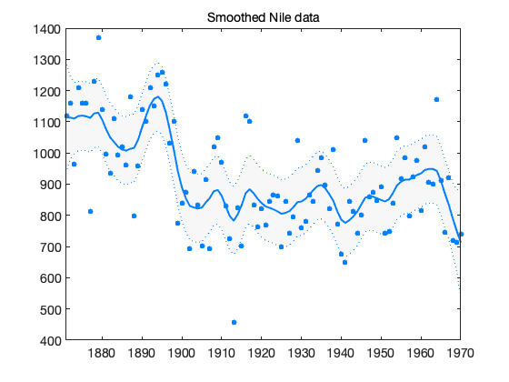
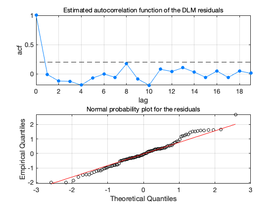

Classical Nile data
Here we fit the classical Nile river flow data
y = [1120 1160 963 1210 1160 1160 813 1230 1370 1140 995 935 ... 1110 994 1020 960 1180 799 958 1140 1100 1210 1150 1250 ... 1260 1220 1030 1100 774 840 874 694 940 833 701 916 ... 692 1020 1050 969 831 726 456 824 702 1120 1100 832 764 ... 821 768 845 864 862 698 845 744 796 1040 759 781 865 ... 845 944 984 897 822 1010 771 676 649 846 812 742 801 ... 1040 860 874 848 890 744 749 838 1050 918 986 797 923 ... 975 815 1020 906 901 1170 912 746 919 718 714 740]'; t = (1871:1970)'; % time
Observation and model errors match those in Petris et al. (2009)
s = sqrt(15100); w = sqrt([755 755]);
Fit the DLM model
out = dlmfit(y,s,w);
figure(3);
dlmplotfit(out,t);
title('Smoothed Nile data')
 figure(2); dlmplotdiag(out,t);